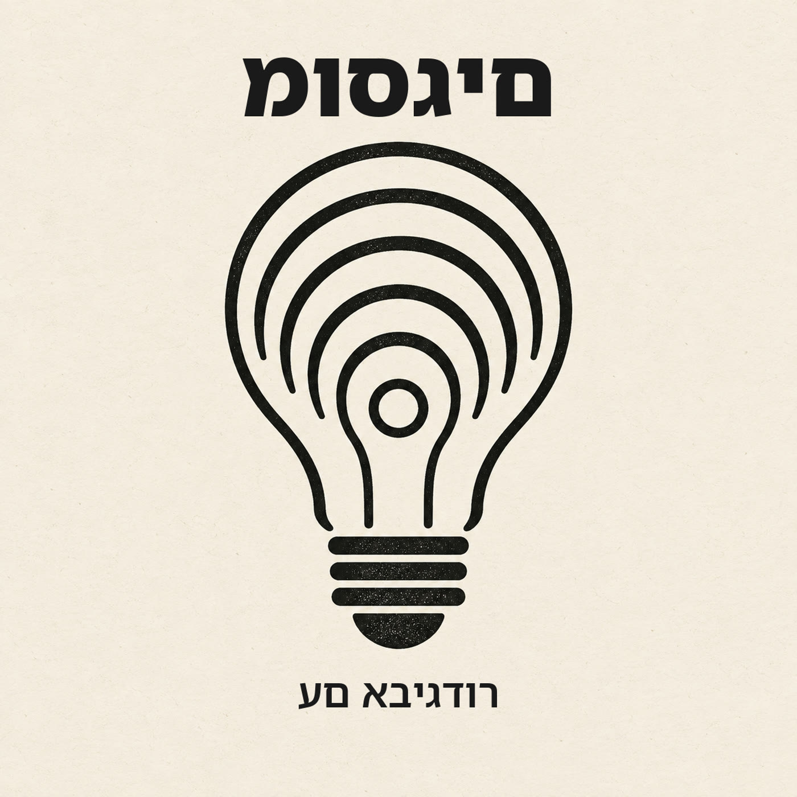

בלשון בני אדם
מיני-פודקאסט יומי בעברית: בכל פרק, חמש דקות, מושג אחד מעולמות הטכנולוגיה, הסוכנים והבילדרות - מוסבר בגובה העיניים, בזמן שיש לכם בדרך לקפה.
התוכנית מופקת ומוגשת באמצעות בינה מלאכותית וקול סינתטי.
הוספה ל-Apple Podcasts לפי כתובת:
DNS מתרגם domain לכתובת IP, אבל caches ו-TTL קובעים כמה זמן העולם ימשיך להאמין גם לתשובה שכבר השתנתה. מקורות: MDN, Cloudflare Learning.
ה-event loop מאפשר ל-Node.js לטפל בהרבה פעולות I/O בלי לחסום את ה-thread הראשי, אבל חישוב כבד אחד עדיין יכול לעצור את כל הדלפק. מקורות: nodejs.org.
Cursor Rules הופכים הוראות חוזרות ל-context ממוקד שנכנס בזמן הנכון, בלי להעמיס את כל חוקי הפרויקט על כל משימה. מקורות: תיעוד Cursor.
Observability מחברת logs, metrics ו-traces לסיפור שאפשר לחקור, כדי לעבור מדיווח עמום על מערכת איטית למקום המדויק שבו הבקשה נתקעה. מקורות: Google SRE Book, OpenTelemetry Docs.
Pull request טוב לא רק מחבר branch ל-main: הוא מסביר למה השינוי נחוץ, מציג את ה-diff והבדיקות, ומאפשר להתאים את עומק ה-review לסיכון לפני שעושים merge. מקורות: GitHub Docs.
כדי שסוכן AI יקרא מ-GitHub, יחפש ב-database או יפעל ב-Notion, מישהו צריך ללמד אותו אילו כלים קיימים ואיך משתמשים בהם. MCP מציע שפה משותפת לגילוי הכלים האלה. בפרק הזה נבנה את המפה של host, client ו-server, נבדיל בין tools, resources ו-prompts, ונבין למה פרוטוקול אחיד פותר את בעיית החיבור אבל לא את בעיית האמון. מקורות: modelcontextprotocol.io.
Cache גורם למסכים להיפתח מהר יותר, מוריד עומס משרתים וחוסך קריאות יקרות ל-API. אבל כל עותק מהיר הוא גם סיכון קטן להציג עבר כאילו הוא הווה. cache hit ו-cache miss, המתח בין TTL קצר לארוך, למה invalidation מסתבך כשיש browser, CDN ו-backend, ו-cache stampede. השאלה: כמה ישן מותר למידע להיות לפני שהמהירות מפסיקה להיות שווה את זה? מקורות: MDN, Cloudflare Learning.
מה קורה כשכמה פעולות צריכות לקרות ביחד או בכלל לא? על transactions, ההבטחה שאו שהכול נשמר או ששום דבר לא נשמר, ומה זה ACID בלי נוסחאות. מקורות: PostgreSQL Docs.
מה זה API ולמה כולם מדברים עליו? החוזה שמאפשר לתוכנות לדבר אחת עם השנייה - מהבקשה הכי פשוטה ועד הכלים שאתם משתמשים בהם כל יום. מקורות: MDN.
Branch הוא מצביע נייד ל-commit, שנותן לניסוי היסטוריה משלו עד שמחליטים אם לעשות merge.
מערכת אמינה לא מניחה שבקשה תגיע פעם אחת; היא מזהה retries ודואגת שהכוונה תתבצע פעם אחת. מקורות: MDN, AWS Builders' Library.
Agent יכול לערוך, להריץ ולבדוק - ולכן prompt טוב מגדיר scope, context ותוצאה שאפשר לעשות עליה review. מקורות: תיעוד Cursor.
Prompt מסביר מה לעשות עכשיו; CLAUDE.md מסביר איך עובדים כאן - אבל הוא context, לא guardrail טכני.
אפליקציה היא סדרת שיחות של request ו-response, ו-system design מתחיל בשאלה מה קורה כשהשיחה נכשלת.
לפני ששומרים ב-Git יש תחנה באמצע - Staging. למה שני צעדים ולא אחד, ואיך זה מציל אותך מ-commit מבולגן. מקורות: git-scm.com, GitHub Docs.
נתיב של קובץ הוא לא קסם, הוא כתובת. אחד הדברים הקטנים שפותחים את הדלת לטרמינל. מקורות: תיעוד POSIX של pwd/cd.
השאלה שמשפרת כמעט כל מוצר עם סוכן AI: אם הסוכן טועה עכשיו, כמה קשה להחזיר את העולם למצב הקודם? מקורות: מכתבי בעלי המניות של אמזון 2015-2016 ו-NIST AI 600-1.